Как правильно раскрутить Инстаграм используя накрутку через сервисы и ботов

- Раскрутка страницы в Инстаграме* в 2025
- Шаг 1: проверка профиля
- Шаг 2: выбор способа продвижения
- Обзор сервисов накрутки
- Боты-накрутки
- Шаг 3 важность плавного старта и разнообразия накрутки активностей
- Шаг 4: оценка первых результатов
- Сравниваем результаты с конкурентами
- Эффективность накрутки в продвижении Инстаграма*
- Вопросы, ответы и советы новичкам
На примере небольшого блога расскажу и покажу, как работает продвижение в Инстаграм* в 2025. Ежегодно механика определения накрутки подписчиков и других видов активности меняется, делая раскрутку Инстаграма* сложнее. Поэтому рассмотрим, как естественное продвижение, которым воспользовался, так и сервисы накрутки.
Раскрутка страницы в Инстаграме* в 2025
Начнем с базового: раскрутка предполагает планомерное увеличение активности, привлечение внимания к контенту и как результат – блог/сообщество или личный аккаунт с постоянной аудиторией. В дальнейшем, получаем рекламные предложения, можем позиционировать себя как микро-блогера. Именно небольшие группы привлекают внимание рекламодателей в 2025, потому что микро-блог – это больше реальных и активных подписчиков. Задачи, которые поставила перед собой:
- Определить допущенные ранее ошибки: проанализировать шапку профиля, составить другой контент-план.
- Анализ аудитории. На кого будут нацелены публикации, какой tone-voice использовать.
- Выбрать способ продвижения.
- Оцениваю первые результаты.
В этот раз решила пользоваться только сервисами накрутки и отследить их эффективность в продвижении маленького блога. Помимо подписчиков, решила задействовать накрутку лайков, чтобы активность не выглядела как автоматическая и социальная сеть не подвергла страницу санкциям.
Шаг 1: проверка профиля
У меня – небольшой блог, на котором даже не разблокирован полностью раздел «Статистика» (если у вас менее 100 подписчиков, то подробных данных не увидите). Это усложняет задачу, потому что определять аудиторию придется вручную: исходя из темы и тех подписчиков, которые уже подписаны на блог.
- Первый этап: изменить описание, добавить новые публикации и удалить неактуальные.
- Второй этап: оформить профиль по последним трендам. Нужно добавить Рилсов, загрузить пару публикаций, проявить активность на страницах конкурентов. В публикациях не забываю указать хештеги Инстаграма* для раскрутки.
- Третий: выделяю аудиторию. Это нужно для накрутки, потому что планирую в сервисе выставить параметры по геолокации.
Было: никакой реакции на публикациях, нет последних загруженных Историй.
 Стало: небольшая активность >10 лайков, просмотры на постах и Сторис.
Стало: небольшая активность >10 лайков, просмотры на постах и Сторис.
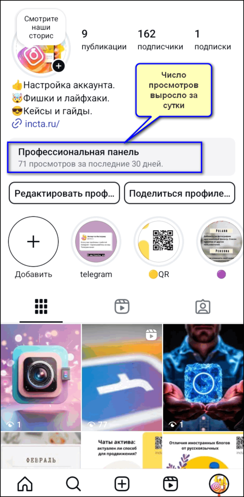
Шаг 2: выбор способа продвижения
Мой выбор пал на сервис HypeZone, где заказала первые 50 подписчиков и немного лайков для продвижения последней публикации, те же самые услуги есть и в боте ТГ - otec_smm_bot.
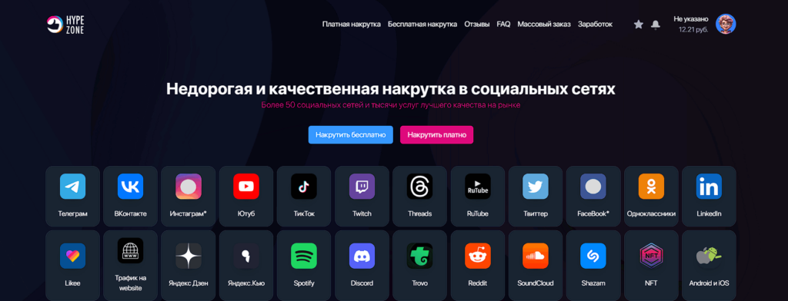
Затраченный бюджет: 100 рублей. Тип подписчиков: быстрые, стандарт. Цена: 0,84 копейки за штуку.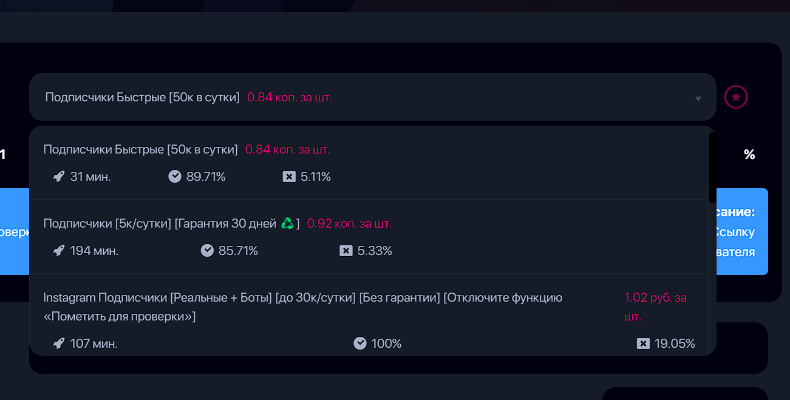
Лайки: Мир, старт за 0-10 минут. Цена: 0,01.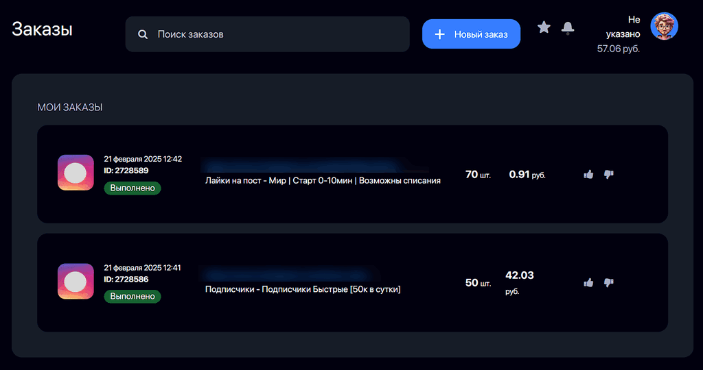
Показатель прироста аудитории: +20% от общего числа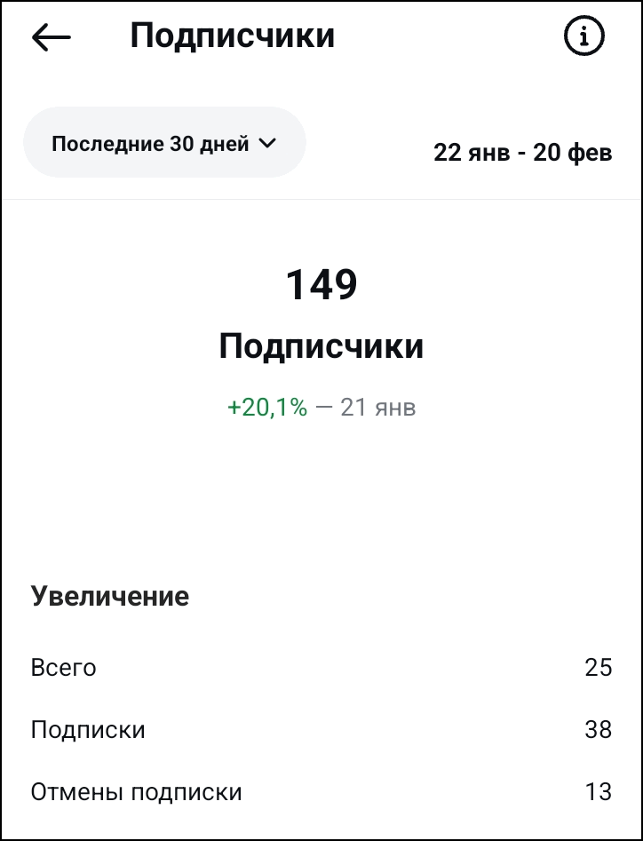
Воспользовалась дополнительной услугой – бесплатные подписчики, которая предложена в сервисе зарегистрированным и неавторизованным пользователям. Новые фанаты подписались на страницу в течение 10 минут, что отобразилось в статистике.Согласно официальной статистике – более чем в 15% популярных аккаунтов (от 200 тыс. подписчиков) владелец хотя бы раз пользовался накруткой. Но это неточно по причине, что не каждый способ получения механической активности можно отследить. Поэтому, этот показатель увеличивается до 30%.
При выборе способа продвижения нужно исходить из целей, которые вы преследуете:
- увеличение числа подписчиков. Как следствие: вызвать доверие потенциальной аудитории, привлечь внимание;
- получить реальных фанатов. В этом случае стоит указывать настройки фильтрации: страна, соответствующая вашей или языку, на котором вы составляете публикации, возраст, половая принадлежность;
- найти клиентов. Радиус целевой аудитории сужается до ближайших городов;
- продвигать свои услуги вне привязки к географическим данным.
Накрутка поможет авторам-экспертам, которым не нужно искать клиентов из рядом находящихся населенных пунктов, блогерам, информационным и развлекательным группам.
Обзор сервисов накрутки
Для себя сделала фаворитом HypeZone из-за высокой скорости накрутки, возможности выбора типа аудитории, разнообразия в подписчиках. Если выбрать в настройках «Реальные пользователи», то вы получите прибавку в разделе «Подписчики», а также сможете заработать настоящих фанатов. Это те, которые оставляют комментарии, ставят лайки и отправляют в рекомендации ваши записи.
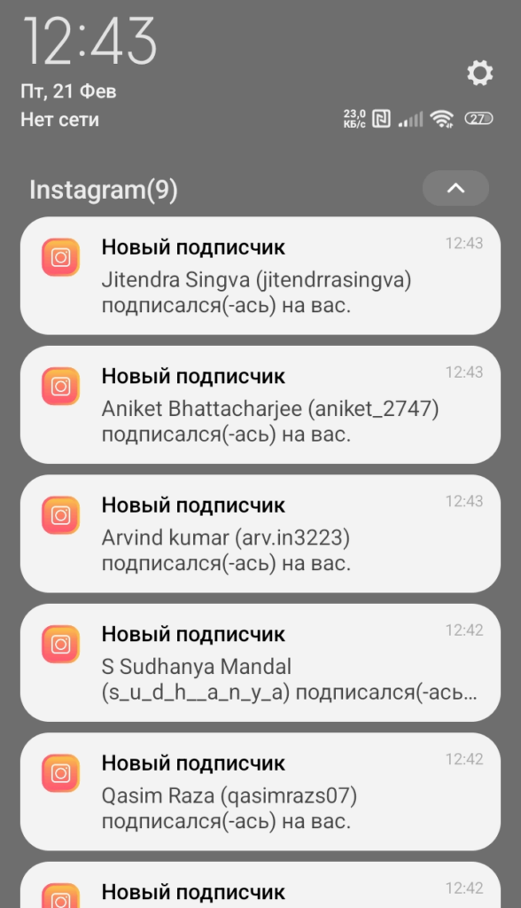
Результат накрутки в Инстаграме* за первые 5 минутУ HypeZone есть преимущества в цене:
| HypeZone | Другие сервисы | |
| Подписчики | От 0,81 копейки | От 1 рубля |
| Лайки | 0,01 | 0,05 |
| Комментарии | 2,37 (положительные) | 3 рубля |
Для раскрутки страницы есть гарантии: новые подписчики останутся с вами в течение первых 30 дней. При оформлении услуги нужно внимательно смотреть на дополнительную информацию: скорость запуска, гарантии, география потенциальных фанатов. Так вы сможете продвигать аккаунт по целевым запросам. Поэтому, если вы не доверяете программам и хотите найти интересный сервис раскрутки – рекомендую HypeZone. Trendoway Неплохой сайт, где есть платные и бесплатные варианты. Вам предложат бесплатных 10 подписчиков или лайков, чтобы вы смогли протестировать работу сервиса. С его помощью можно вернуть активность старым аккаунтам, с помощью соответствующей функции: «Подписчики для заброшенных профилей» за 1,07 за штуку.
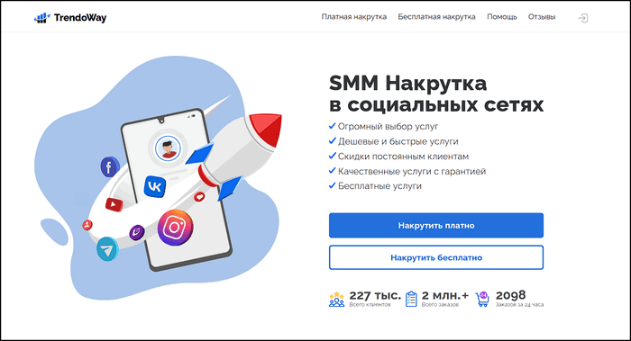
Primelike В PrimeLike есть комплексные услуги, куда входят: Микс из подписчиков и Премиум. Первые – боты вперемешку с реальными пользователями. Вторые – фанаты только из стран СНГ, накрутка медленная. Скорость снижена, чтобы социальная сеть не заблокировала аккаунт из-за излишней активности. Минимальная цена за премиальных – 32 рубля.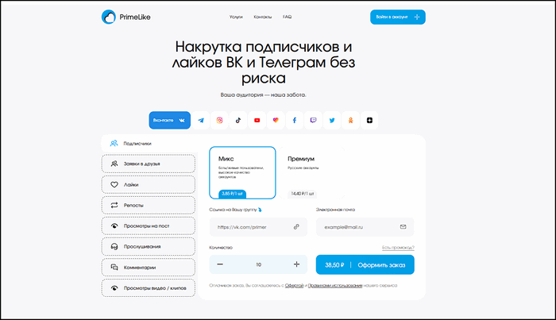
Боты-накрутки
Боты в Телеграме – еще один способ, как раскрутить Рилс в Инстаграме*, получить комментарии и лайки. Для накрутки используйте свой Телеграм-аккаунт, откуда можно управлять задачами, удалять, оплачивать. otec_smm_bot В этом боте можно накрутить потенциальную аудиторию за пару кликов. Допустим, нам нужны подписчики: открываем по ссылке и находим в разделе «Инстаграм*» нужную услугу. Далее, указываем адрес электронной почты, куда придет чек для оплаты, и подтверждаем оплату. В случае с ботами, вам не нужна регистрация, потому что подключение происходит с помощью вашего профиля в Телеграме. Nakrutimsmm_bot Невысокая цена, но качественная накрутка. Цена за подписчика составляет 70 копеек (стандартный тариф). В боте можно выбрать тип аудитории, которую нужно накручивать, воспользоваться дополнительными настройками: фанаты по странам, для закрытых аккаунтов, открытых. Подробнее рассказывается о нем здесь. Гарантирую положительный опыт работы, который не заставит вас искать дополнительную информацию по настройке. prodvichenie_SMM_pro_bot Лайки, комментарии, подписчики, жалобы и просмотры для Рилс – все это вы найдете в боте «Продвижение СММ». Используйте для разных социальных сетей, включая Инстаграм*. Чтобы правильно настроить нужно перейти в раздел «Личный кабинет» и оплатить первый чек. Далее у вас появится предложение получить 50 подписчиков бесплатно.
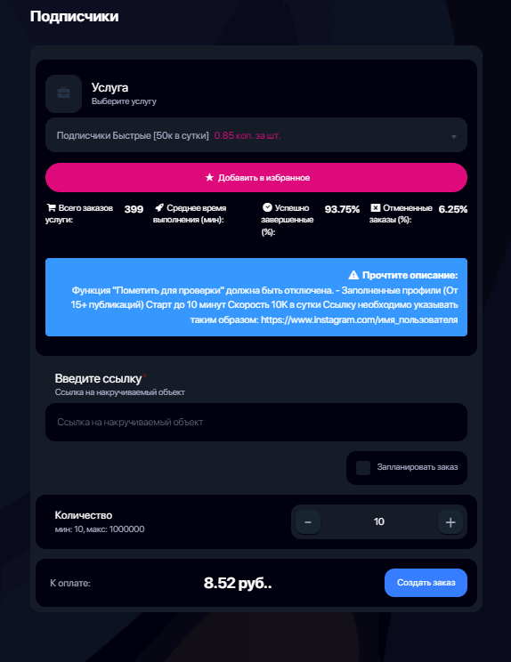
Topnakrutok_ru_bot Скорость запуска – менее 5 минут. Вы можете одновременно оформлять несколько заданий и управлять ими, не выходя из Телеграма. На многие услуги предложена гарантия: отписавшиеся исполнители будут строго наказаны. Цена за 10 подписчиков составляет – 8,40 рублей.Полный перечень всех ботов, которые могут вам понравиться – тут. Это ТОП лучших, существующих на период 2025 в Телеграме.
Шаг 3 важность плавного старта и разнообразия накрутки активностей
Живая раскрутка предполагает не только накрутку с помощью сервисов, а и загрузку новых интересных материалов. Относительно новых аккаунтов – вы постепенно добавляете контент, пишите комментарии и анализируете действия конкурентов. Недавно зарегистрированным пользователям сложно попасть в «теневой бан», если не размещать запрещенный контент.
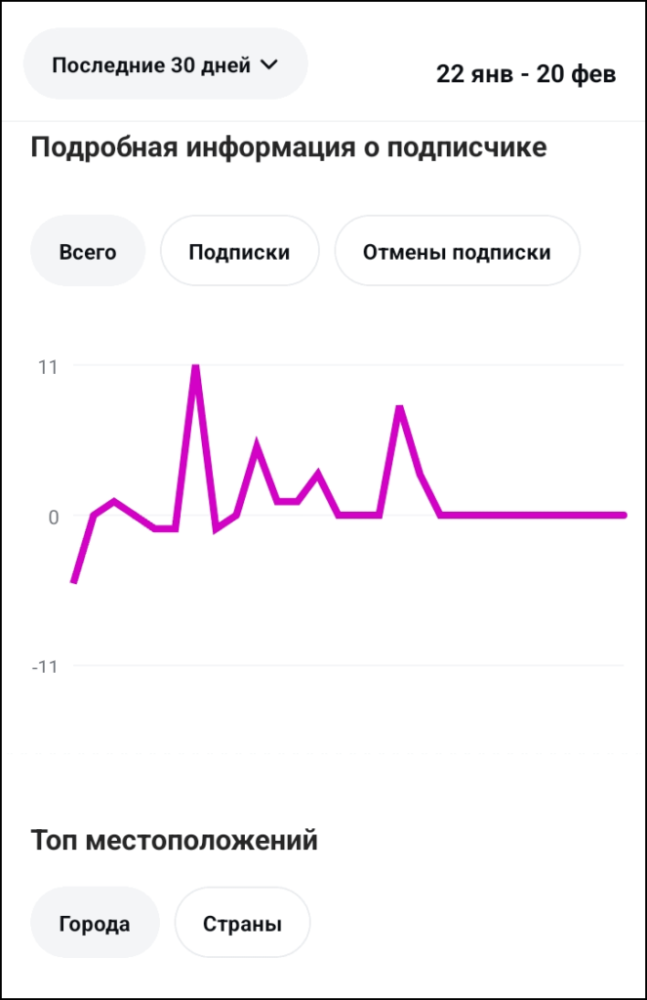
Со страницами, которые некогда были популярны и были заброшены – сложнее. Чтобы восстановить старый профиль, нужно:- выйти из теневого бана;
- протестировать новые записи;
- проанализировать последние тренды;
- определить конкурентов.
Если начинать сразу с накрутки, то это не принесет новой активной аудитории. Поэтому нужно регулярно добавлять новый контент, не забывать о последних идеях. Чем больше ваших подписчиков поставят лайки на записи, тем быстрее пост окажется в Рекомендациях и о нем узнает больший процент потенциальных фанатов. Другая причина для плавного старта: лимиты социальной сети. Если вы не знали, то в Инстаграме* есть ограничения для разных типов аккаунтов. Для новых: не более 100 подписок за час, для старых – не более 200 за тот же промежуток. Если вы активный пользователь, то границы расширяются до 1000 новых фанатов.
Главная ошибка, которую допускают многие специалисты по продвижению – чрезмерное количество действий за малый срок. Инстаграм* срабатывает на 50 однотипных действий, совершенных менее чем за минуту. Поэтому появляется уведомление: «Действие временно ограничено для защиты сообщества».
То же касается комментариев: если вы общались в ветке отзывов, продвигая тем самым свой контент, и откликались слишком часто – социальная сеть может вас временно заблокировать. В течение 24 часов доступ будет восстановлен.
Шаг 4: оценка первых результатов
После первой накрутки, в размере 50 подписчиков, уже получила новых реальных подписчиков. Под постами появились комментарии, которые постепенно будут пополняться новыми записями. На Рилс появились просмотры, несвязанные с накруткой.
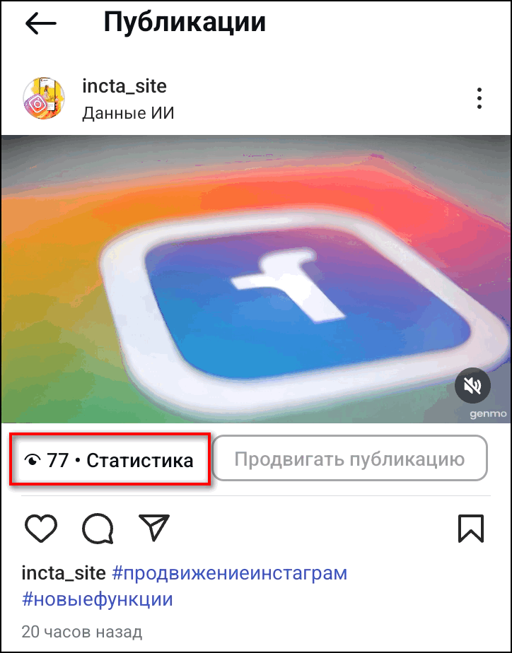
Что получили:- разблокированную статистику;
- возможность просматривать дополнительную информацию по географическим параметрам, часам активности;
- новых подписчиков и лайки на аккаунт, где давно не было активности;
- с помощью новых публикаций привлек внимание аудитории, появились лайки от реальных пользователей.
Таким образом, продвигаться самому с помощью софта – легко и быстро. Но дальнейшие задачи: удержать новых фолловеров, привлечь внимание реальных подписчиков. Чтобы вести страницу в Инстаграме* для раскрутки можно регулярно использоваться ботов и сайты для накрутки, но помнить о безопасности и лимитах.
Сравниваем результаты с конкурентами
Конкуренты продвигаемого аккаунта – онлайн-ресурсы, которые пишут о последних новостях социальной сети, функциях. Поэтому я подбирала примерно похожие профили: с таким же числом подписчиков или чуть больше, количеством комментариев и лайков.
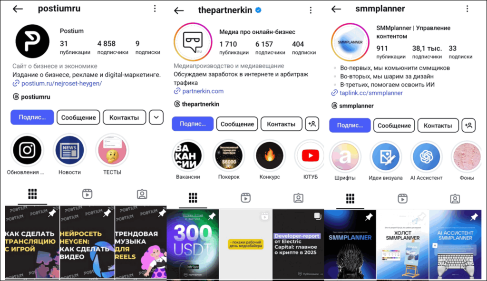
Чтобы отследить эффективность проведенной накрутки, воспользуюсь формулой ER. Если вы не знаете о ней, то это показатель вовлеченности подписчиков. Таким образом можно проверить, сколько накрученных подписчиков у конкурентов, отстаете ли вы в продвижении в своей нише. Распишу подробно: ER= (количество реакций / на число подписчиков) * 100В моем случае: (20 (среднее число лайков) / 146) * 100 = 13,6%. Конкуренты: (120 / 4800) * 100 = 2,6%. В этом случае еще нужно учесть размер аккаунтов: у меня совсем небольшой блог в 150-160 подписчиков, когда у конкурентов фанатов больше. На основании этого делаю заключение, что активность у нас примерно одинаковая, но мне стоит увеличить количество подписчиков. Правильное решение в этом случае:- Продолжать цикличную накрутку.
- Оставлять больше комментариев под публикациями блогером с большим числом фолловеров.
- Заниматься контентом.
- Использовать хештеги для продвижения.
Владельцам таких же небольших профилей рекомендую больше размещать Reels. Они более просматриваемые и интересны публике. Например, разместил запись длинной в 5 секунд и уже в первую минуту получил 10 просмотров. Результат за сутки: 77 просмотров
Эффективность накрутки в продвижении Инстаграма*
Накрутка эффективна для страниц любого масштаба, если её правильно использовать. Рассмотрим ситуации:
- владелец крупного блога (более 100 тыс. подписчиков) с низкой активностью в профиле заказывает накрутку. В его случае, продвижение на малых объемах таким способом не сработает, потому что нужно работать над контентом: привлекать существующую аудиторию к проявлению активности, создавать провокационные Сторис и подливать лайки + комменты через накрутку;
- сообщество с количеством подписчиков в 2000 подписчиков, со средним количеством комментариев и лайков >20-30. Накрутка нужна на увеличение аудитории и активность под постами.
Автоматизированные способы повышения активности срабатывают комплексно, если добавлять к этому естественное продвижение. Положительный эффект накрутки:
- заслужить доверие у потенциальной аудитории. Никто не хочет быть первым, а страницы с минимальным числом подписчиков интересны в случае, если это личный блог. Для информационных и экспертных аккаунтов накрутка будет преимуществом;
- привлечение внимание рекламодателей. Вы выделяетесь на фоне конкурентов, если у вас большая аудитория;
- вывод в рекомендации. Используя накрутку правильно, ваши посты станут быстрее и чаще появляться в разделе «Интересное».
Если соблюдать лимиты, правильно указать настройки и проявлять активность – искусственный способ продвижения будет безопасным и результативным.